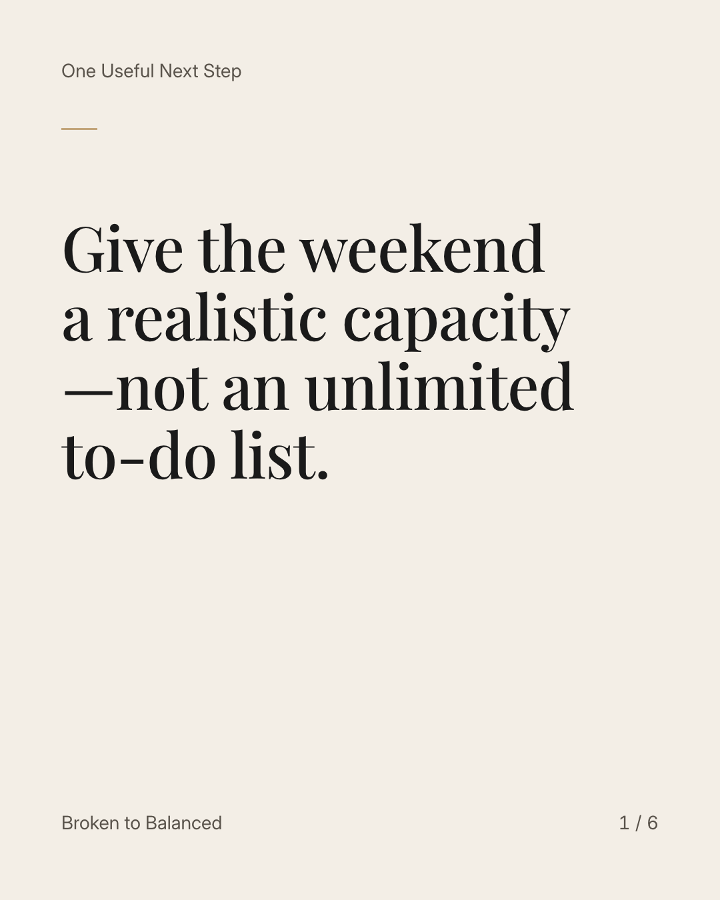
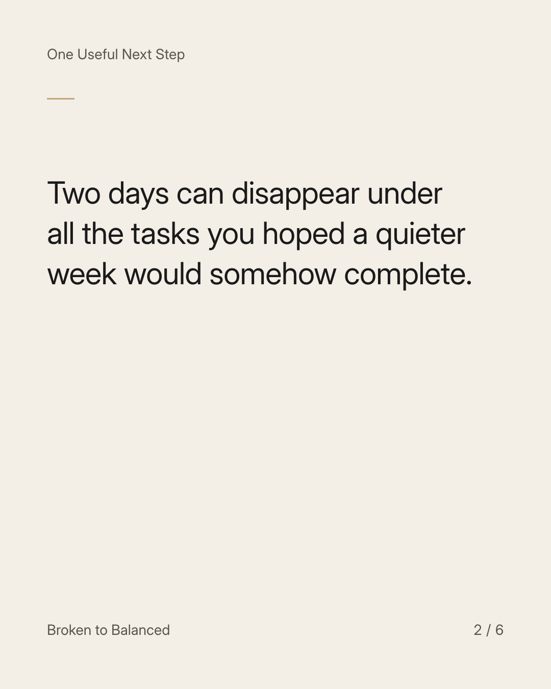
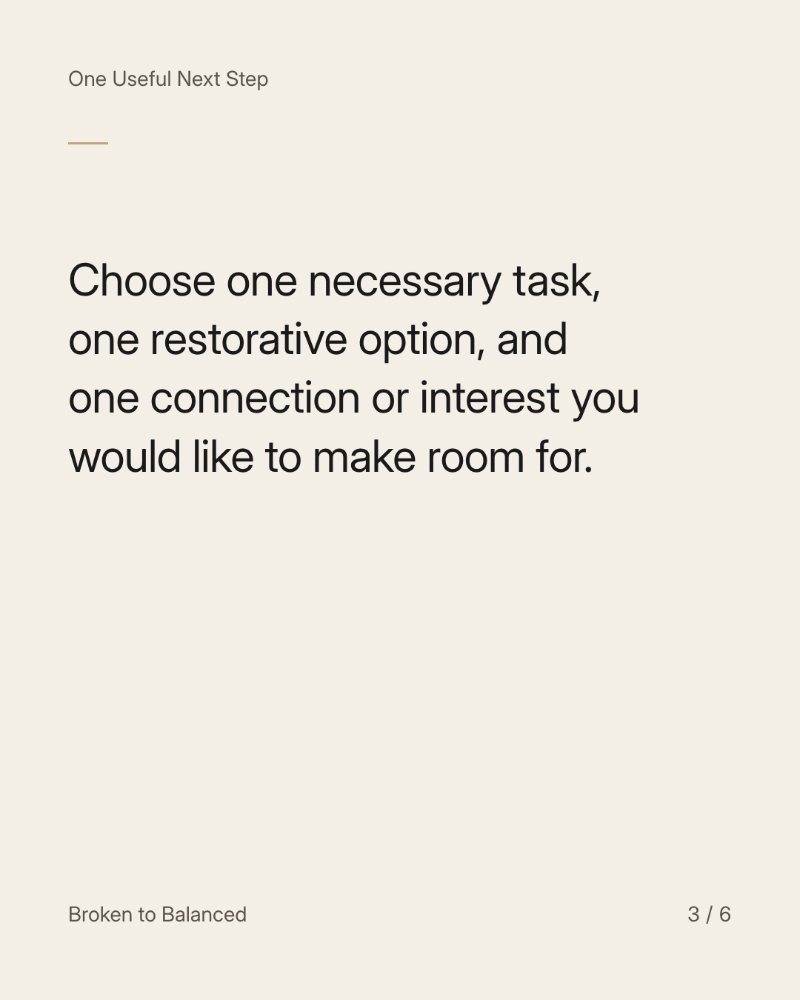
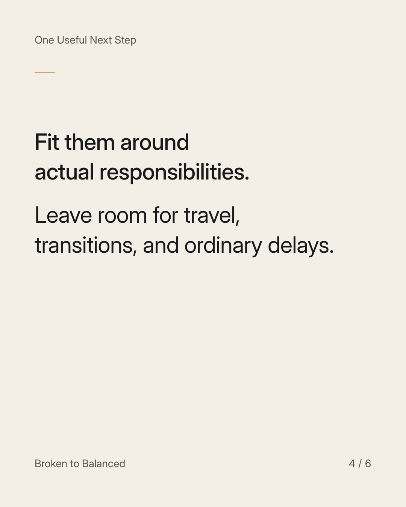
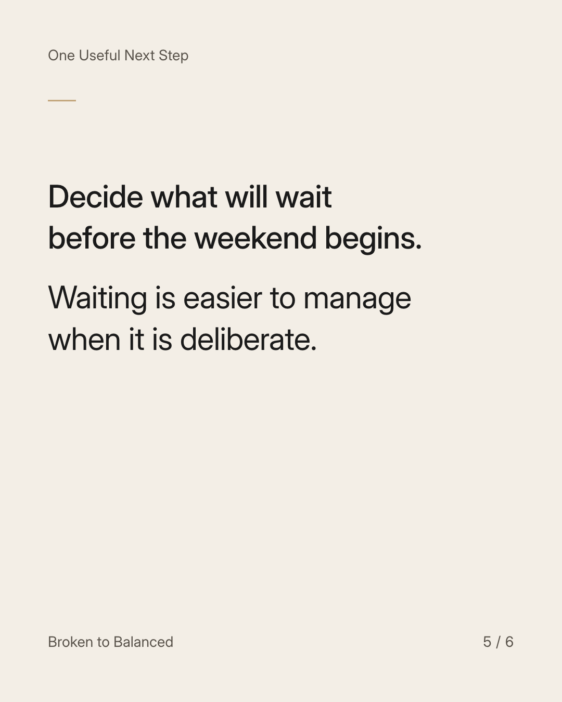

Exact text and accessibility text
Give the weekend a realistic capacity—not an unlimited to-do list.
Slide 1 of 6. Give the weekend a realistic capacity—not an unlimited to-do list.


Exact text and accessibility text
Two days can disappear under all the tasks you hoped a quieter week would somehow complete.
Slide 2 of 6. Two days can disappear under all the tasks you hoped a quieter week would somehow complete.


Exact text and accessibility text
Choose one necessary task, one restorative option, and one connection or interest you would like to make room for.
Slide 3 of 6. Choose one necessary task, one restorative option, and one connection or interest you would like to make room for.


Exact text and accessibility text
Fit them around actual responsibilities. Leave room for travel, transitions, and ordinary delays.
Slide 4 of 6. Fit them around actual responsibilities. Leave room for travel, transitions, and ordinary delays.


Exact text and accessibility text
Decide what will wait before the weekend begins. Waiting is easier to manage when it is deliberate.
Slide 5 of 6. Decide what will wait before the weekend begins. Waiting is easier to manage when it is deliberate.

Exact text and accessibility text
Save this before your weekend becomes another week you cannot finish.
Slide 6 of 6. Save this before your weekend becomes another week you cannot finish.
Exact caption
Plain-text fallback: select and copy the caption.